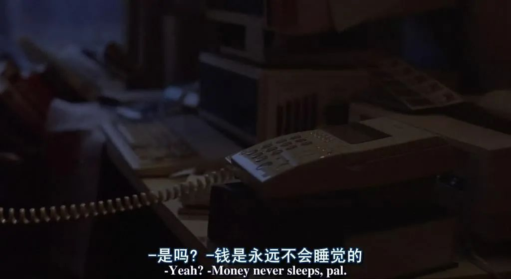
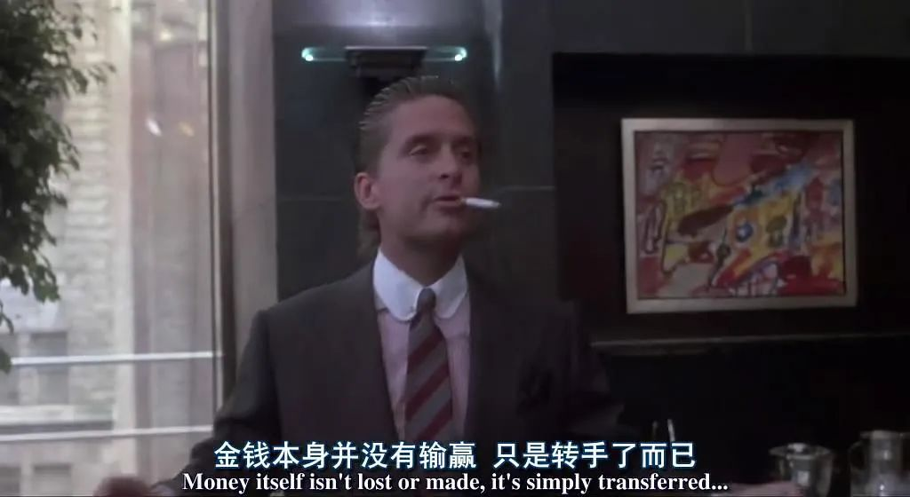
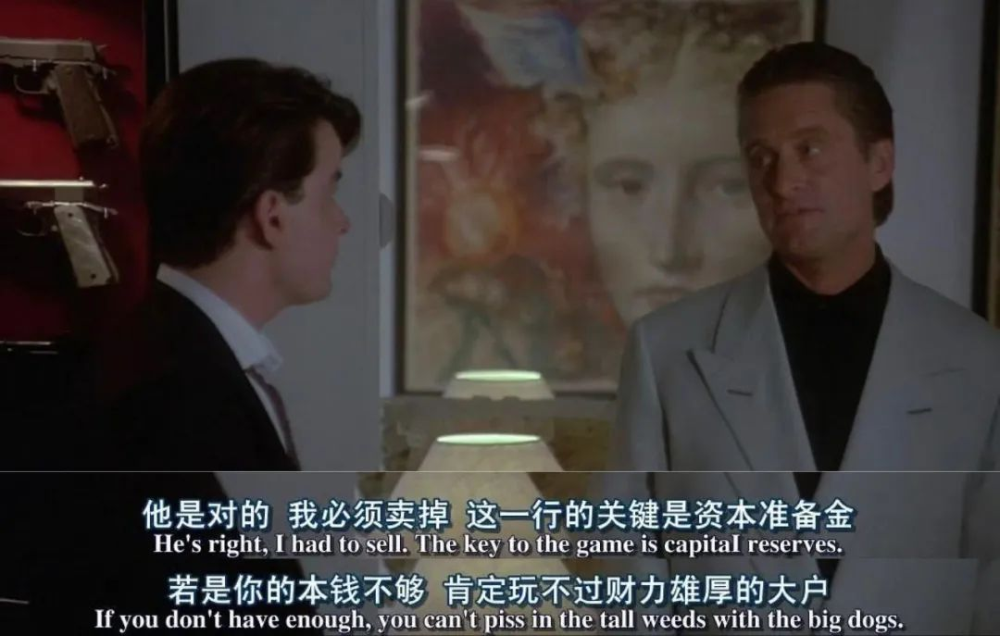

美股又熔断！10天4次，巴菲特：…
原文链接 备份链接 “神奇的2020，我们和股神一起见证历史。” 3月18日，美股因标普500指数盘中跌超7%，再次触发熔断机制，暂停交易15分钟，为美股史上第五次熔断，10天内第四次熔断。 美股熔断时三大股指跌幅情况。 此前，3月9 …


从1月等到3月，路上的花慢慢开了，有时候能闻到白玉兰的清香，春天已经到了，但全球的疫情还没有随着温度的升高衰落下去——法国有男人购入了满满一购物车的法棍，意大利的居民被隔离在家只能在窗台上唱歌剧，有人在微博上分析今天又确诊了特朗普身边的哪一个官员，Instagram上面罕见地出现了卫生纸的广告……
情绪有时候就是如此隐形，但它依然在另外一种介质上被反映出来，那就是金融市场。股市、金价、外汇都经历了很多年里从来没有出现的情况，3月9日，美股开盘迅速就触发熔断，这是在1997年之后首次触发熔断机制。直到北京时间今天凌晨零点56分，美股经历了本月的第四次熔断。A股也难免受到影响，在3月11日迎来了一次明显下跌。
有跌落的地方就有上升，有危险的地方就有机会，这个春天是一个财富在飞速周转的季节，货币以人们常规不能想象的速度在被得到和被失去。在杠杆率高的虚拟货币和期权圈子里，可能20分钟就足够让一个人经历暴富和失去一切的完整过程。
有人说自己坐在家里，资产就像水分一样蒸发。那些数字的背后，是一个个具体的人和他们如坐过山车一样的悲喜。
文 | 马拉拉
编辑 | 萧祷
运营 | 肖睿
“赚钱之后我辞职了，但是”
阿苗 男 A股
我2015年毕业之后就一直在业余炒股，当时是从家里拿了5万块入市的。这几年里经历了不少大落，比如2016年1月4日我生日，那时候A股还有熔断的机制，当天就熔断了两次，那是我这辈子印象最深的一个“生日礼物”。没两天，1月7日上午9点58分，触发二次熔断直接停盘到休市，全天有效交易时间不足15分钟，那是证券交易员唯一一次中午就下班的日子。那次股灾持续了很久，但好在本金不多，加上我又不断逢低补仓，手里的钱慢慢地又了涨回来。
股市有起伏很正常，但是我从来还没有经历过今年这种剧烈的程度，现在我本金也比较大，会有前一天可能挣了40万，第二天又亏掉20万的情况。春节前后，人就像是在坐过山车，挣的快，去的也快，心脏受不了。
一开始，我算是一个“赢家”。1月20号的时候钟南山宣布了新冠肺炎会人传人，23号武汉封城，当时我就想如果疫情恶化，会不会其它的城市也这样。那大家呆在家里能干嘛，我当时第一个感觉就是游戏，所以重仓了游戏股票。2月3号A股开盘，第一天很多股票全跌停，我买的游戏股票还涨了5个点，第二天它涨停，我出手，就这么挣了30万左右。这算是我进股市以来，短时间内挣钱最快的一笔，3年的工资。
虽然那段时间来来回回很不稳定，有单日挣30多万的，也有第二天跌回去10多万的，但是总体来说是挣钱的。以前我喜欢买一些中长股，持有一两个月，但这次我主要是走短线，操作下来，多的时候有赚到100多万，我就铁下心，和老板提了离职，他批准了。股市曾经被我当做过一条现有的出路。

▲图 / 《大时代》剧照
那时候我还想过要去认真学下金融，但还没有来得及想得具体，行情慢慢就开始变化了。我重仓了一些科技股，在年初开盘的时候别的股票跌停，但科技股没有，一方面是重点发展的领域被大家看好，一方面也被各种基金重仓买爆。但是进入3月之后，疫情全球化爆发，消费市场增长放缓，再加上石油价格战的爆发，资本开始抛售全球资产避险，导致欧洲和美国的股市持续暴跌，美股连续熔断。倾巢之下，焉有完卵，直接导致了我资产的缩水。
在提离职之后的两周，我不仅赔掉了自己的100万，甚至还赔掉了一部分家里的钱。那时候真的还挺触动的，因为我可以赔光，但不要扯到我家人，会很自责。最低落的那两天，人真的不太想说话，特别怕被人问起，很丢脸。
以前我是很放松的，可能睡到十点才起床，但现在早上六七点就自然醒了。睡之前看一下国外的股市，醒来再看一眼，其实我知道自己看了也没用，但就是为了让自己有个预期，可能是和精神紧张有些关系。
我最近真的有点慌，股市不挣钱，但是也不会清仓或者这次就退出来，还是相信会好的。相比于股市来说，虚拟货币和期权的波动更大，它们才算是玩心跳，时间以分钟来算。前两天比特币价格从5000多跌到3000多然后又涨回来到4、5000，我看到一个人从4万开始炒，不到一个小时挣了20多万，当然亏也亏很大。

▲图 / 《华尔街》剧照
“买10克黄金，养一只电子宠物”
Coco 女 黄金
在去年的8月，我从朋友圈接触到了黄金理财。一个看起来不太会理财的朋友告诉我，黄金在涨价，他买了1克。而且还告诉我很简单，直接可以在小程序里面买，不需要我做任何事，不需要我动任何脑子。黄金这个东西本身就让人觉得，很简单，对不对？所以我就先买了1克，又买了1克，总之加起来是买了5克，1克350元左右乘以5，花了2000块差不多吧，我就带着这价值2000块的黄金在最近坐了一次“过山车”。
本来我是不怎么留意它的，我希望它变成我的存钱罐，一直存一直存，看存到啥时候变成一笔“巨款”，拿出来买个包。我平时很热爱消费，一克克黄金的这么购入呢，可以强制我储蓄。虽然我买包不需要和老公报备，但我告诉他我要买个包，万一他不同意，我能自己买了，那么我的高兴程度就会乘以二。
最近我看得比较勤了，特别是美股熔断附近，同事们总是会讨论理财的话题，我连儿子的生日年份都记不住，没有股票，也没有基金，于是每次同事说到这些的时候，我都会去看一看我安静的黄金账户。
有一天，我点进去小程序，发现涨了100多块，一共才2000块钱，觉得很高兴。过了几天呢就玩出了过山车的感觉，前一天可能还是涨100多，第二天就变成了涨70多，现在已经变成了亏60多。不过也还好，亏也就亏100多，不是什么大事。为了认真参与，我还定了一个提醒，黄金价格低到330了会提醒我一下，结果周一就到330以下了，我又买了5克。赚了钱有时候会和同事分享，昨天赚了100块，今天赚了4块之类的，就会比较好笑。
我没心思关心金融市场，完全不懂，就觉得黄金特别像小时候玩的电子小鸡，或者现在玩的旅行青蛙，很静态，很乖，不需要照料，偶尔去看可能还小涨一点，就像蛙寄回来的明信片。看到它的时候感觉很peaceful，因为有它的存在，才证明了我在理财，而理财应该是成熟人生的标配嘛。

▲图 / 《华尔街》剧照
“开年损失了6位数，我觉得迷茫”
小琳 女 A股
我在新西兰上班，会把一些钱放在国内，比如半定期地买一些理财，前前后后投了40万人民币进A股，也关心汇率……我总有些不切实际的幻想，希望能够抄个底。
去年我是赚了钱的，契机很微妙，因为看到一条新闻说国家会重点发展某个领域，我就重仓买了相关的股票。那支股票也算争气，从年中到年底一直很稳定。大概赚了小10万块钱的时候，我心想：“哦，赚钱了，可以买个爱马仕。”但当时没有买包也没有停手，我总觉得可以赚多一点，再多一点点……
A股年初开盘我就一直在亏，一个多月的时间，先是之前赚的钱蒸发了，到这两天直接亏到了本钱，前后算起来得有6位数。其实这种事情吧，说了也是自己心塞，别人看起来同情，但其实内心庆幸。我只能后悔当时赚钱的时候为什么不卖掉？
其实是可以跑脱的。我有两部手机，一部上班用，一部专门用来下载炒股和理财的APP。以前大盘好，我下班回到家都想不起来要看另一个手机，所以等我发现的时候赚的钱已经基本赔完了，当时我还在给国内找物资、捐口罩。本来想跑，但是新闻里看到国内疫情的向好情形，炒股的朋友也说肯定会涨，我就还想等等，这一等本金就往下掉……（A股）真是欠我一个爱马仕！
止损按理来说是解脱的，就当之前是做了一场梦吧，但我把钱拿出来之后感到的却是迷茫，我不知道要把这笔钱放在哪里。我一个上班族不敢往上比，只能说有一点灵活周转的小钱，还是患得患失，根本不敢承受很大的风险，自己也知道承担不起。
把钱放在银行定期，说不定只能跑个通胀，如果中间需要周转就很亏。我也有一部分钱放在理财，去年收益好的时候每天利息能有200多，刚才我看了一下昨天的利息是45。之前我还想过炒房，但是“满五唯一”出台之后，税很高，肉疼。
还是会有炒股遗留下来的一些习惯，看新闻说油价跌了就想着如果我买一定买汽车股，但是暂时是不会再入了。这个月心理失衡的时候就只能去看看那些炒股论坛里说亏了30多万的，心情才会稍微好一点，只能把那些当成做了一场梦吧。
▲图 / 《大时代》剧照
看到减肥店就生气，因为“绝不反弹”
丫丫 女 外汇
我是学国际政治的，对于金融市场曾经有一点盲目的自信，觉得能预判到很多问题。但是我的“理财事故”，也确实是因自信而起，因自信而崩。
进入金融市场成为一颗小韭菜是八年前了，当时我还在国外工作，笃信“你不理财，财不理你”的话术，每月开了工资就会扔出去一点点，尤其是外汇市场里，就这样有了第一桶金。
因为关注国际政治，所以认为自己对大趋势有判断，不至于亏惨。2018年，意大利组阁失败，大选后几个月新政府班子依然“难产”，很快意大利就遭遇了股债双杀，直接拖累了欧元走势。我记得当时是一个周五，刚进入欧盘交易时段，欧元对美元的汇率“断崖式雪崩”，跌幅迅速超过100个基点。
就在那段时间，我做出了错误的决定，因为考虑到意大利组阁艰难，还有我自认为熟悉的背景资料——比如什么议会格局民粹化、政党格局碎片化、疑欧情绪暴涨等等，我猜还得跌，就在当时的最低点清了盘，还好本金不多，但是损失也有五位数。
自此之后我就逃离了外汇市场，跑得比谁都快，甚至毫不关心，心也就不太悬着了，至于散落在其他市场的钱，我也权当没有了，偶尔打开是个惊喜。
那时候看过一个段子，来解释为什么金融市场总是牛短熊长，那是因为你做梦的时间永远没有上班赚钱的时候多。我当时活得也挺段子的，看到路边的减肥店牌子都跟着生气，因为它写了四个字，“绝不反弹”。
也有人拉我买比特币，说保准儿升值，我没敢入手，因为翻看了一堆资料，可是怎么也不懂。最近我问了问，原本在两个月前告诉我7000以下可以入的人，告诉我算了，等3000吧。他是语音回复的，明明比我还小两岁，但是叹着气，似乎可以听出苍老。
这两天看新闻，多少有一种看热闹不嫌事大的感觉。尽管如此，我被套牢的那一点点美股，已经从有机会翻身，到了一夜回到8年前的时候。

▲图 / 《华尔街》剧照
“有朋友12号进场，刚进去就被埋了”
冷老师 男 美股
我是2016年开户，进入美股市场，当时是因为不定期有一些外币的收入，想要找一个地方放着，而美元储蓄利率很低，所以就准备定投一下美股，现在算起来里面有30万美金左右。这笔钱不急用，因此追求长期稳健收益，就像存钱罐一样。
美股熔断后，我有个朋友在12号进场，想要去抄底，刚好赶上连续熔断的一周，肯定是刚进去就被埋了。
美股这几次熔断100%是和疫情失控有关系的，好在当时国内A股是先有了反应，在美股第一次熔断之前，我就按照当时A股的一些热点，卖掉了一部分长期的美股仓位，换成了医药和远程办公的股票，陆陆续续地调整了一些，加上从不动用杠杆，所以亏损幅度没有盘面那么大。
这次的美股整体来说受损还挺严重的，标普500指数从最高点到现在算是跌了33%左右。我之前定投的那些股票，平均也是20%-30%的跌幅，还好调仓及时，少亏当赢吧。
美股和A股是不太一样的，在疫情扩散到全球之前，美股已经持续增长了很多年，它是那种符合价值投资的股市，我从里面也赚到过一些钱。但是它也有一些自己的特点，比如美股AI机器人量化交易较多，突然的大跌会出现多米诺骨牌式的连锁反应。还有就是融资门槛低，融资利率也低，因此杠杆使用率比较高，赚的时候收益放大很多，但遇到现在这种极端情况，损失也同样被放大，很多账户可能被迫平仓，引起踩踏，进一步加剧了恐慌。
未来还说不好，我感觉疫情没有控制下来，美股就还没有到底，可能比次贷危机的时候还要严重一点，至少还得几个月的时间恢复稳定。我现在是在等，想要等市场情绪稳定的时候可以再继续定投。

▲3月18日，美股迎来了史上第五次熔断，这也是10天内的第四次熔断。图 / 《华尔街》剧照
“心脏不太受得了”
阿东 男 美股+期权
我的投资组合中有波音的股票，过去的一年，波音从每股近400美金跌到了近期最低89美金，我在2016年以每股约132美金购入，波音的股价已经跌破我的购入价格，其目前的市值已经低于特斯拉了，让人难以置信。

▲波音公司近十年股价图。图 / 受访者提供
3月9日第一次熔断的时候，纽交所数据流显示交易暂停，当时我还有点吃惊，因为上一次这样的情况发生在1997年。没有人经过一周两次美股熔断，可现在它已经熔断第四次了。
我本身从事期货量化交易的工作，美股和期权是我的个人爱好。我在2016 年美股熊市入场，当时觉得标普500价格相对合理，在持续跌了三个月的负回报后，我的资本回报才由负转正。那时候跌得很慢，回来的也很慢，对于新手比较难熬，但投资者并没有慌。这次完全不一样，这两周和2016年那次比起来，只能用“更低、更快、更强”来形容。
第一次熔断的时候我是吃惊，第二次熔断后我就觉得问题可能会更严重——当下我的账户从历史最高点跌落了14%，要想办法了。
我通过期权交易进行对冲和获利，弥补一些损失。交易期权让我更加体会到了这次强烈的波动性。有一个叫VIX的指数，是专门用来衡量期权波动性的，它在这两周达到了历史最高，就差上天了。
本来股市已经让我觉得挺有压力的，期权这么高的波动让人真的觉得心脏不太受得了。我自己最近真实的情况：可能一开始收益240%，但没过一会儿便是另一种情况。
目前的情况，许多避险资产都有反常的现象，连黄金的价格也出现了高点下降。原因是有些基金是带杠杆，需要追加保证金，或是购入政府债券进行担保贷款。但是股市下跌出现流动性问题，无法追加保证金的时候就有被平仓的危险。一些公司和个人急需现金，开始出售其他金融资产去补充保证金。现在的资本市场就是一种混乱的情况，完全没有办法预测下一小时，甚至是下一分钟的事情。

▲图 / 《华尔街》剧照
“我还在等着抄底”
蚊子 男 港股
作为两个孩子的爸爸，我炒股已经10年以上了，A股也炒，港股也炒，但是我现在主要还是在港股。投资一些有前景的公司，稳定地拿到利息和分红，等股票价格高一点也可以卖掉，把这些作为工资之外应对突发情况的经济补充。我在A股呆过，一直坚持投资有价值的公司，但是好像不太适合A股，好一点的公司股价都太高了，还是靠短线赚钱多一些。
我是在美股第一次熔断的时候明显感觉到不对劲的，当时我发现此前买过的一支银行股在傻傻地往下掉。这几年这家银行的业绩不是很好，但也不至于从40美元掉到了25美元左右，觉得问题大了，等了一天马上跑了。那一天让我亏掉了8000元，如果没有跑得亏2万多。
我发现人好像随着年龄的增加变得越来越容易害怕，以前年轻，只有一个孩子，自己创业、炒股，想过用这种方式去维持生活。但后来我发现做不到，现在就一边在离家快100公里的地方上班，一边炒股，希望老了能够买上一间铺子收租。
不能没有钱啊，没有钱啥都怕，怕老人生病，小孩不乖，花钱的地方多，都是担心别人。A股玩不溜，我不碰，现在我还剩下几万港币，准备等着，等到时候看能不能在港股抄底。
▲图 / 《大时代》剧照

每人互动
分享你的理财事故

文章为每日人物原创
侵权必究


每人作者
长按二维码向我转账
受苹果公司新规定影响，微信 iOS 版的赞赏功能被关闭，可通过二维码转账支持公众号。
原文链接 备份链接 “神奇的2020，我们和股神一起见证历史。” 3月18日，美股因标普500指数盘中跌超7%，再次触发熔断机制，暂停交易15分钟，为美股史上第五次熔断，10天内第四次熔断。 美股熔断时三大股指跌幅情况。 此前，3月9 …
原文链接 备份链接 文/范欣 3月以来，美股接连发生熔断，让全球投资者都惊出了一身冷汗，连股神巴菲特都惊叹“活久见”，芝加哥期权交易所（CBOE）恐慌指数VIX也在3月17日超过2008年金融危机时的高点，创下收盘记录新高。受此影响，连黄 …
原文链接 备份链接 又是惊心动魄一夜！ 在疯狂降息和超级量化宽松政策失效后，美联储再度祭出救市“大杀器”，美国政府也在积极酝酿万亿刺激计划，启动“直升机撒钱”时代。 消息传出后，昨日晚间跌破20000点的道指盘中开始暴力拉升，纳斯达克指 …
原文链接 备份链接 我是记者郭静。 如果说武汉是这场疫情的中心，那么中心的中心，就是金银潭医院。作为武汉市传染病专科医院，这里是最早打响这场全民抗“疫”之战的地方。在与死神较量的正面搏击中，身为一院之长的张定宇，他拖着身患“渐冻症”的病 …
原文链接 备份链接 我是记者郭静。 如果说，一定要我选出这些天武汉涌现的众多平凡英雄中我最佩服的一位，那无疑是汪勇。一个多月前，他只是个普普通通的快递小哥，一个多月后，他被人们称为“生命摆渡人”。这个凭借一己之力搭建起医护人员整条后勤保障 …